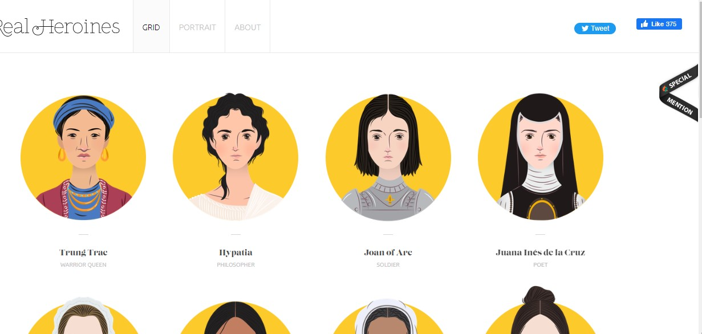
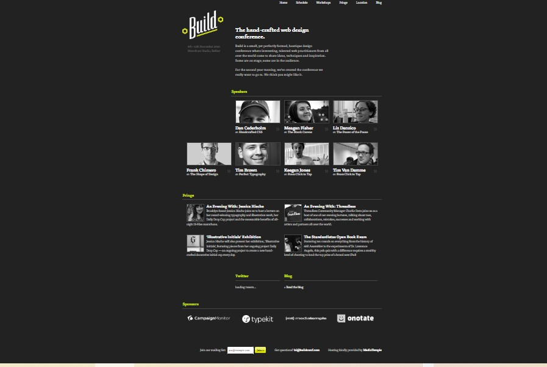
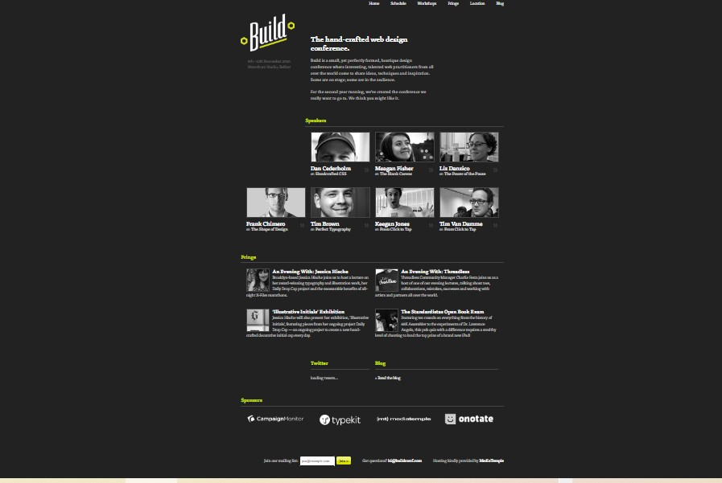

Rule of Thirds
Hub Spot
hubspot.com
Hubspot makes good use of the rule of thirds on the main page. On the first third you can see that it says "Start free or get a demo". On the last third (farthest to the right) you can see that there were some graphics included. This sort of layout is very pleasing to the eye and brings attention to the button since our eyes start from left to right. Overall, this webpage has a good balance and uses the rule of thirds well.
White Space and Clean Design
Real Heroines
realheroines.com
This website makes very good use of white spaces. You can see here that each of the photos of the people are well spread out and they have an equal amount of white space around each photo.
Visual Hierarchy
Build Conference
2010.buildconf.com

Build Conference
2010.buildconf.com
This website does a great job at using visual hierachy. As you can see, it is very pleasing to the eye and main parts of text that your eye is drawn to form a "Z" shape. This is called the Z-pattern.